Author: Joanne Osuchukwu
MindTrack is a journaling and goal-tracking web application focused on mental health and self-care. The app allows users to log daily activities such as mood, sleep, stress, and gratitude. It provides motivational features like streak counters, averages, and visual feedback to encourage consistency.
Users can view and edit past entries through a history list or calendar, customize which activities they want to track, set personal goals, and even toggle reminders. MindTrack was implemented using JavaScript and Svelte and is deployed publicly on Netlify.
Purpose: To understand real users’ challenges and motivations in journaling and mental health tracking.
Interview Script included questions about prior experiences, motivations, goals, challenges, preferred inputs, and feedback needs.
Participant 1 (Friend A)
• History: Tried Daylio and Apple Notes; stopped due to repetitiveness and lack of reminders.
• Motivation: Wanted mood + sleep tracking to see stress triggers.
• Preferred Inputs: Dropdowns and sliders for speed.
• Needs: Clear 'Saved successfully' messages and summaries.
• Metric for success: Consistency of 5+ days per week.
Participant 2 (Friend B)
• History: Tried Headspace journaling and notebooks; stopped due to rigidity/forgetfulness.
• Motivation: Gratitude practice and stress tracking.
• Needs: Quick wins, graphs, streaks, reminders.
• Metric for success: Lower average stress scores, more gratitude entries.
Takeaways
• Tools fail if too repetitive or demanding.
• Core needs: mood-sleep-stress awareness, clear feedback, motivation, optionality.
• Best inputs: dropdown, slider, number, and short text.
• Motivators: save confirmation, visual summaries, reminders, streaks.
Name: Sarah M.
Age: 29
Profile: Graduate student balancing coursework and research. Tech-comfortable but dislikes time-consuming apps.
Goals: Track mood daily, monitor sleep for productivity, quick stress visualization, gratitude practice.
Challenges: Abandoned past apps for being repetitive/complex, lost motivation without feedback, needs reminders.
Scenario: Logs entries nightly with dropdown + slider, checks dashboard weekly for stress trends, edits via calendar.
Explored ~10 sketch variations. Combined dashboard, streaks, and calendar. Feedback indicated streak counter motivates, mood emojis improve UX, and Save button should stand out.
Takeaway: Users want speed, motivation, and accessible history navigation.
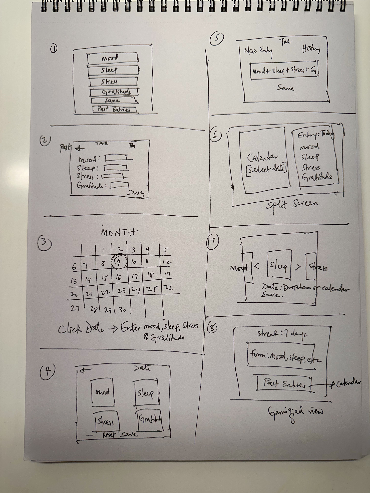 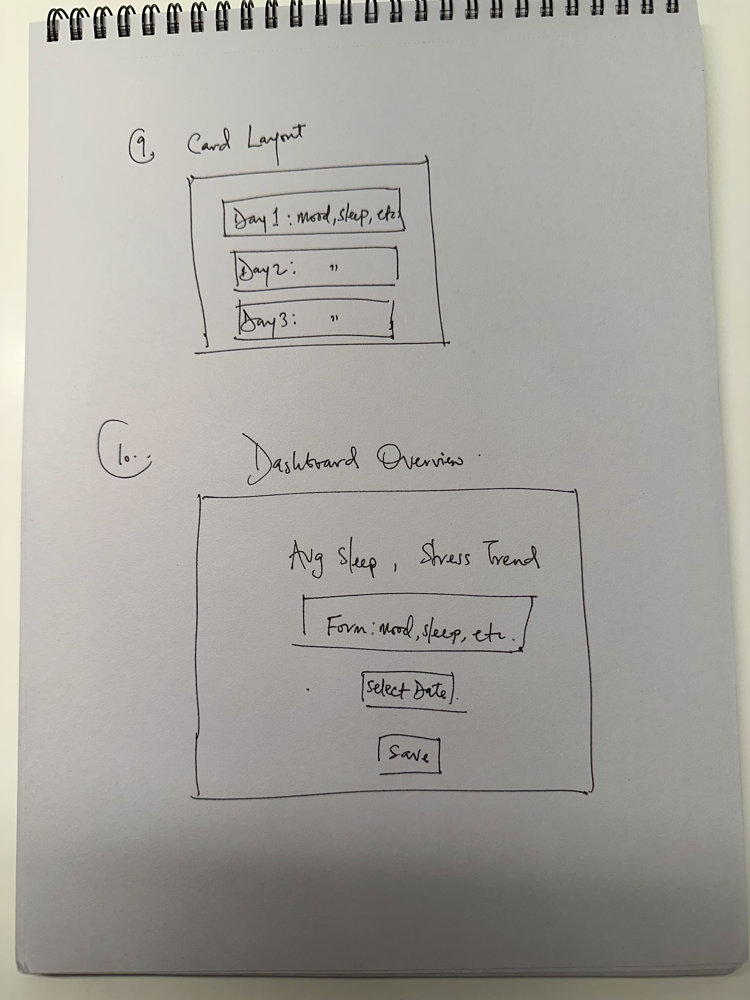 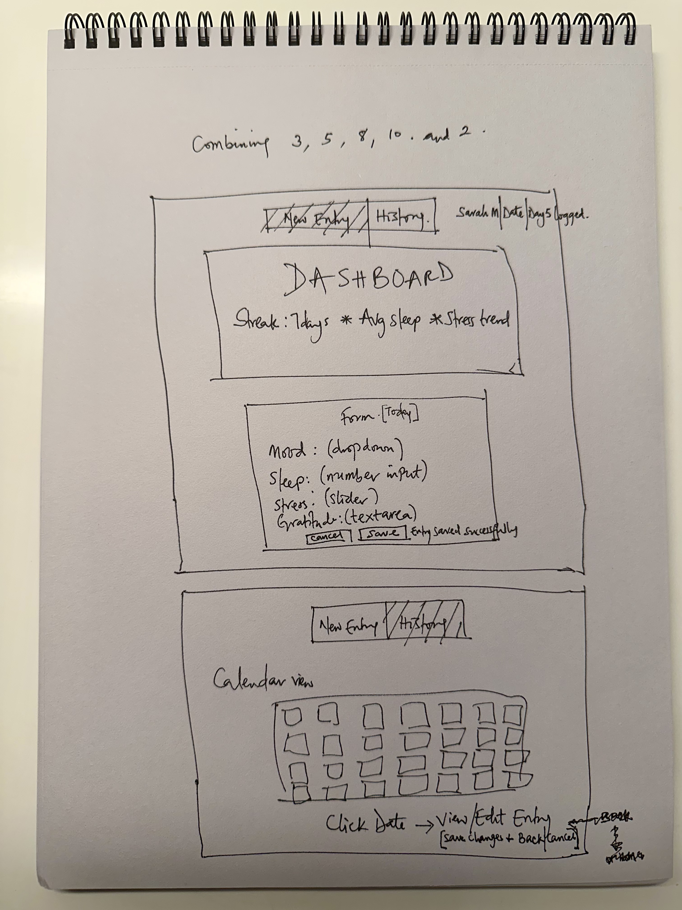
Colors: Teal-blue (#0ea5e9) for calm headers, green (#34d399) for Save, red (#f87171) for Cancel, orange/red for stress.
Layout: Gestalt principles, top-to-bottom flow, card sections.
Typography: Arial, bold headers, consistent hierarchy.
Accessibility: WCAG contrast, emojis supplement text, large buttons.
Dashboard shows name, days active, streak, averages. Form tracks mood, sleep, stress, and gratitude. Save/Cancel with confirmation message.
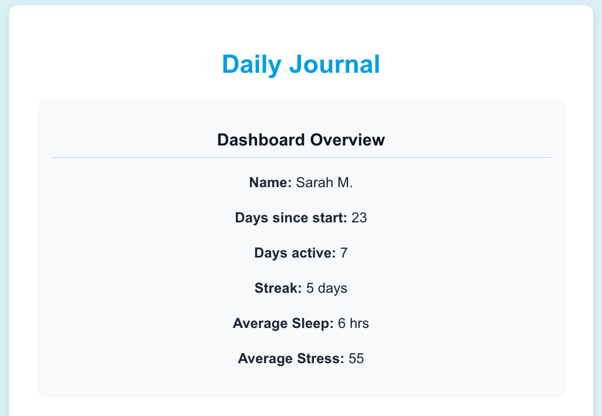 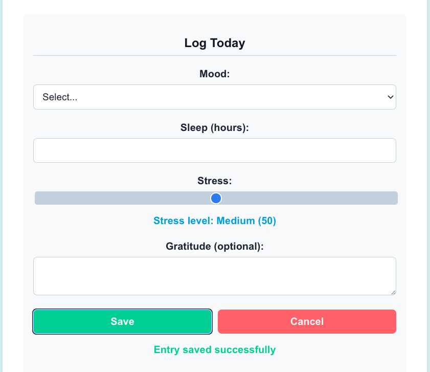History list and calendar view display past logs. Entries can be edited with visible feedback. Calendar highlights logged days.
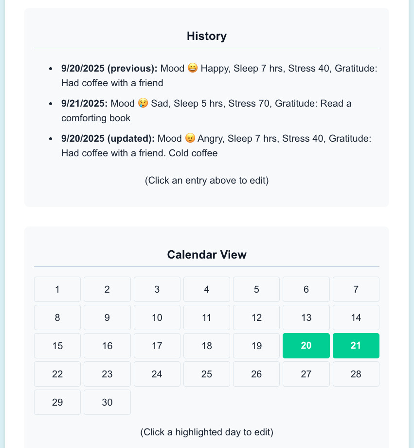 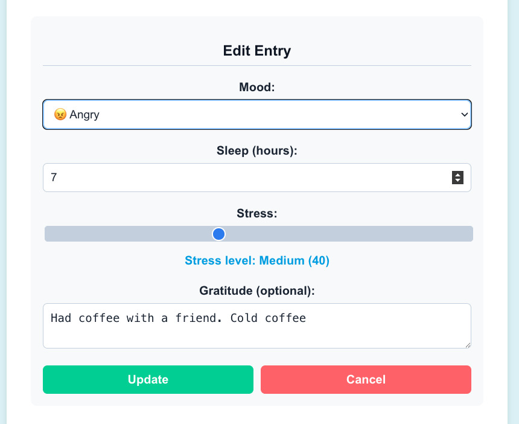Users can set sleep/stress goals. Performance overview compares averages to goals. Customize section lets users toggle activities.
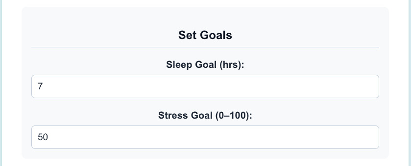 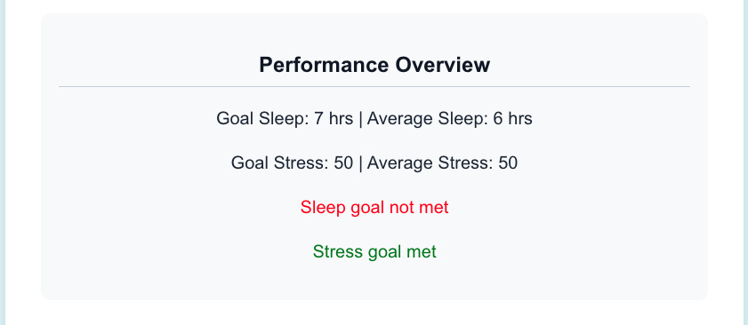 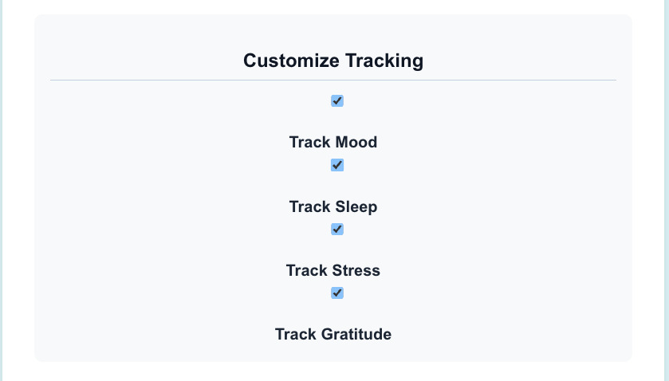Added a toggle for daily reminders at 8 PM. Feedback message confirms reminder state.
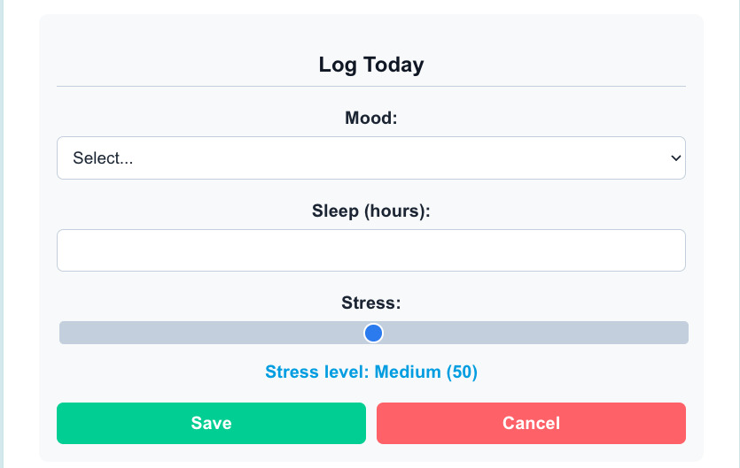Framework: Svelte
Languages: JavaScript, HTML, CSS
Inputs: dropdown (mood), number input (sleep), range slider (stress), textarea (gratitude)
Data Handling: Entries stored in an array of objects; reactive variables update dashboard/averages.
UI: Card-based layout, teal/blue theme, visual feedback, Gestalt grouping.
The demo video demonstrates Levels 1-4: logging entries, viewing/editing history, goals/customization, and reminders.
YouTube Link: https://youtu.be/-D7sFm2Tuic